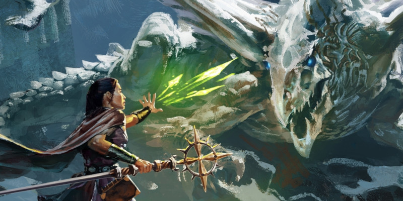

Sorts et Tatouages magiques
Ce document présente de nouveaux sorts et un nouveau type d'objets magiques, les tatouages magiques. La plupart des sorts se concentrent sur un style alternatif d'invocation, invoquant un esprit qui revêt une forme physique que vous pouvez adapter à la situation.
Sorts
Les nouveaux sorts apparaissent dans ces listes de sorts.
Sorts de bardeNiveau 3 Sorts de clercNiveau 3 Niveau 5 Niveau 6 Sorts de druideNiveau 2 Niveau 3 Niveau 4 |
Sorts d'ensorceleurNiveau 1 Niveau 3 Niveau 4 Niveau 6 Sorts de magicienNiveau 1 Niveau 3 Niveau 4 Niveau 6 |
Sorts d'occultisteNiveau 3 Niveau 4 Niveau 6 Sorts de paladinNiveau 3 Niveau 5 Sorts de rôdeurNiveau 2 |
Descriptions des sorts
Les sorts sont présentés par ordre alphabétique en VO.
Flux d'acide
niveau 1 - évocation
Temps d'incantation : 1 action
Portée : personnelle (ligne de 9 mètres)
Composantes : V, S, M (un peu de nourriture pourrie)
Durée : Concentration, jusqu'à 1 minute.
Un courant d'acide émane de vous dans une ligne 9 mètres de long et 1,50 mètre de large dans la direction de votre choix. Chaque créature dans la ligne doit réussir un jet de sauvegarde de Dextérité ou être couvert d'acide pour la durée du sort ou jusqu'à ce qu'une créature utilise son action pour gratter ou laver l'acide qui se trouve sur lui-même ou sur une autre créature. Une créature couverte d'acide subit 3d4 dégâts d'acide au début de chacun de ses tours.
Aux niveaux supérieurs. Lorsque vous lancez ce sort en utilisant un emplacement de sort de niveau 2 ou supérieur, les dégâts augmentent de 1d4 pour chaque niveau d'emplacement de sort au-delà du niveau 1.
Forme d'Outremonde
niveau 6 - transmutation
Temps d'incantation : 1 action
Portée : personnelle
Composantes : V, S, M (un objet gravé de symboles des plans extérieurs, d'une valeur d'au moins 500 po)
Durée : Concentration, jusqu'à 1 minute
En prononçant une incantation, vous faites appel à la magie des plans inférieurs ou des plans supérieurs (selon votre choix) pour vous transformer. Vous gagnez les caractéristiques suivantes jusqu'à la fin du sort :
- Vous êtes immunisé contre les dégâts causés par le feu et le poison (plans inférieurs) ou les dégâts radiants et nécrotiques (plans supérieurs).
- Vous êtes immunisé contre l'état empoisonné (plans inférieurs) ou l'état charmé (plans supérieurs).
- Des ailes spectrales apparaissent sur votre dos, vous donnant une vitesse de vol de 12 mètres.
- Vous obtenez un bonus de +2 à votre Classe d'Armure.
- Toutes vos attaques avec une arme sont magiques, et lorsque vous réalisez une attaque avec une arme, vous pouvez choisir d'utiliser votre modificateur de sorts, au lieu de la Force ou la Dextérité, pour les jets d'attaque et de dégâts.
- Vous pouvez attaquer deux fois, au lieu d'une, lorsque vous réalisez une attaque à votre tour avec une action. Ignorez cet avantage si vous avez déjà une aptitude vous donnant droit à une attaque supplémentaire.
Voile des esprits
niveau 3 - nécromancie
Temps d'incantation : 1 action bonus
Portée : personnelle
Composantes : V, S
Durée : Concentration, jusqu'à 1 minute
Vous invoquez les esprits des morts, qui volent autour de vous pendant toute la durée du sort. Les esprits sont intangibles et invulnérables, et ils peuvent être bon ou mauvais (selon votre choix). Jusqu'à la fin du sort, toute attaque que vous ferez infligera 1d8 de dégâts supplémentaires lorsque vous touchez une créature à moins de 3 mètres de vous. Ces dégâts sont radiants si les esprits sont bons et nécrotiques s'ils sont mauvais. Toute créature qui subit ces dommages ne peut pas regagner de points de vie jusqu'au début de votre prochain tour. En outre, toute créature de votre choix que vous pouvez voir et qui commence son tour à 3 mètres ou moins de vous voit sa vitesse de déplacement réduite de 3 mètres jusqu'au début de votre prochain tour.
Aux niveaux supérieurs. Lorsque vous lancez ce sort en utilisant un emplacement de sort de niveau 4 ou supérieur, les dégâts augmentent de 1d8 pour chaque niveau d'emplacement de sort au-delà du niveau 3.
Convocation d'esprit d'aberration
niv 4 - invocation
Temps d'incantation: 1 action
Portée : 27 mètres
Composantes : V, S, M (un tentacule mariné et un globe oculaire dans un flacon en cristal d'une valeur d'au moins 400 po)
Durée : Concentration, jusqu'à 1 heure
Vous invoquez un esprit du Royaume lointain ou d'un autre plan de la folie. L'esprit se manifeste physiquement dans un espace inoccupé que vous pouvez voir dans la portée du sort. Cette forme corporelle utilise le bloc de stat ci-dessous. Lorsque vous lancez le sort, choisissez une forme entre beholder, slaad et rejeton stellaire. La créature ressemble physiquement à votre choix, et cela détermine également certains des traits de son bloc de stat. La créature disparaît lorsqu'elle tombe à 0 point de vie ou à la fin du sort. La créature est amicale avec vous et vos compagnons pendant la durée du sort. En combat, la créature partage votre initiative, mais prend son tour immédiatement après le vôtre. Elle obéit aux ordres verbaux que vous lui lancez (aucune action n'est requise de votre part). Si vous n'en émettez pas, elle se défend mais ne prend aucune action.
Aux niveaux supérieurs. Lorsque vous lancez ce sort en utilisant un emplacement de sort de niveau 5 ou supérieur, la créature assume le niveau de l'emplacement utilisé lorsque le bloc de stat stipule le niveau du sort.
Esprit d'aberration
Aberration de taille M, neutre mauvaisPoints de vie égaux au modificateur de Constitution de l'aberration + le modificateur de votre caractéristique d'incantation + 10 fois le niveau du sort
Vitesse 6 m, vol 9 m (beholder uniquement ; stationnaire)
16 (+3)
10 (+0)
15 (+2)
16 (+3)
10 (+0)
6 (-2)
Sens vision dans le noir 18 m, Perception passive 10
Langues commun des profondeurs, comprend les langues de son créateur
Régénération (slaad uniquement). L'aberration récupère 10 points de vie au début de son tour s'il possède au moins 1 point de vie.
Aura chuchotante (rejeton stellaire uniquement). Au début de chacun des tours de l'aberration, chaque créature à 1,50 mètre ou moins de celle-ci doit réussir un jet de sauvegarde de Sagesse contre le DD du jet de sauvegarde de vos sorts ou subir 3d6 dégâts psychiques, à condition que l'aberration ne soit pas incapable d'agir.
Attaques multiples. L'aberration réalise un nombre d'attaques égal à la moitié du niveau de ce sort (arrondi à l'inférieur).
Rayon oculaire (beholder uniquement). Attaque à distance avec un sort : +3 + le niveau du sort au toucher, portée 9 m, une créature. Touché : 1d8 + 3 + le niveau du sort dégâts psychiques.
Griffes (slaad uniquement). Attaque au corps à corps avec une arme : +3 + le niveau du sort au toucher, allonge 1,50 m, une cible. Touché : 1d10 + 3 + le niveau du sort dégâts tranchants. Si la cible est une créature, elle ne peut pas regagner de points de vie avant le début du prochain tour de l'aberration.
Coup psychique (rejeton stellaire uniquement). Attaque au corps à corps avec un sort : +3 + le niveau du sort au toucher, allonge 1,50 m, une créature. Touché : 1d6 + 3 + le niveau du sort dégâts psychiques.
Convocation d'esprit bestial
niv 2 - invocation
Temps d'incantation : 1 action
Portée : 27 mètres
Composantes : V, S, M (une plume, une touffe de fourrure et une queue de poisson à l'intérieur d'un gland doré d'une valeur d'au moins 200 po)
Durée : Concentration, jusqu'à 1 heure
Vous invoquez l'esprit d'une bête. L'esprit se manifeste physiquement dans un espace inoccupé que vous pouvez voir dans la portée du sort. Cette forme corporelle utilise le bloc de stat ci-dessous. Lorsque vous lancez le sort, choisissez un environnement entre air, terre et eau. La créature ressemble physiquement à un animal de votre choix qui est originaire de l'environnement choisi, et cela détermine également certains des traits de son bloc de stat. La créature disparaît lorsqu'elle tombe à 0 point de vie ou à la fin du sort. La créature est amicale avec vous et vos compagnons pendant la durée du sort. En combat, la créature partage votre initiative, mais prend son tour immédiatement après le vôtre. Elle obéit aux ordres verbaux que vous lui lancez (aucune action n'est requise de votre part). Si vous n'en émettez pas, elle se défend mais ne prend aucune action.
Aux niveaux supérieurs. Lorsque vous lancez ce sort en utilisant un emplacement de sort de niveau 3 ou supérieur, la créature assume le niveau de l'emplacement utilisé lorsque le bloc de stat stipule le niveau du sort.
Esprit bestial
Bête de taille P, sans alignementPoints de vie égaux au modificateur de Constitution de la bête + le modificateur de votre caractéristique d'incantation + 10 fois le niveau du sort
Vitesse 9 m, escalade 9 m (terre uniquement), vol 9 m (air uniquement), nage 9 m (eau uniquement)
18 (+4)
11 (+0)
16 (+3)
4 (-4)
14 (+2)
5 (-3)
Langues comprend les langues de son créateur
Amphibien (eau uniquement). La bête peut respirer aussi bien dans l'air que sous l'eau.
Vol agile (air uniquement). La bête ne provoque pas d'attaques d'opportunité lorsqu'elle quitte l'allonge d'un ennemi en volant.
Tactique de groupe (terre et eau uniquement). La bête a un avantage aux jets d'attaque contre une créature si au moins l'un de ses alliés est à 1,50 mètre ou moins de la créature et n'est pas incapable d'agir.
Attaques multiples. La bête réalise un nombre d'attaques égal à la moitié du niveau de ce sort (arrondi à l'inférieur).
Maillet. Attaque au corps à corps avec une arme : +4 + le niveau du sort au toucher, allonge 1,50 m, une cible. Touché : 1d8 + 4 + le niveau du sort dégâts perforants.
Convocation d'esprit céleste
niv 5 - invocation
Temps d'incantation : 1 action
Portée : 27 mètres
Composantes : V, S, M (un reliquaire doré d'une valeur d'au moins 500 po)
Durée : Concentration, jusqu'à 1 heure
Vous invoquez un esprit des plans supérieurs. L'esprit se manifeste physiquement sous la forme d'un ange dans un espace inoccupé que vous pouvez voir dans la portée du sort. Cette forme corporelle utilise le bloc de stat ci-dessous. Lorsque vous lancez le sort, choisissez entre vengeur et défenseur. Ce choix détermine certains des traits de son bloc de stat. La créature disparaît lorsqu'elle tombe à 0 point de vie ou à la fin du sort. La créature est amicale avec vous et vos compagnons pendant la durée du sort. En combat, la créature partage votre initiative, mais prend son tour immédiatement après le vôtre. Elle obéit aux ordres verbaux que vous lui lancez (aucune action n'est requise de votre part). Si vous n'en émettez pas, elle se défend mais ne prend aucune action.
Aux niveaux supérieurs. Lorsque vous lancez ce sort en utilisant un emplacement de sort de niveau 6 ou supérieur, la créature assume le niveau de l'emplacement utilisé lorsque le bloc de stat stipule le niveau du sort.
Esprit céleste
Céleste de taille G, neutre bonPoints de vie égaux au modificateur de Constitution du céleste + le modificateur de votre caractéristique d'incantation + 10 fois le niveau du sort
Vitesse 9 m, vol 12 m
16 (+3)
14 (+2)
16 (+3)
10 (+0)
14 (+2)
16 (+3)
Immunités aux conditions charmé, effrayé
Sens vision dans le noir 18 m, Perception passive 10
Langues céleste, comprend les langues de son créateur
Attaques multiples. Le céleste réalise un nombre d'attaques égal à la moitié du niveau de ce sort (arrondi à l'inférieur).
Arc radiant (vengeur uniquement). Attaque à distance avec arme : +2 + le niveau du sort au toucher, portée 45/180 m, une cible. Touché : 2d6 + 2 + le niveau du sort dégâts radiants.
Masse radiante (défenseur uniquement). Attaque au corps à corps avec une arme : +3 + le niveau du sort au toucher, allonge 1,50 m, une cible. Touché : 1d10 + 3 + le niveau du sort dégâts radiants, et le céleste peut se choisir lui-même ou une autre créature qu'il peut voir à 3 mètres ou moins de la cible. La créature choisie gagne des points de vie temporaires égaux aux dégâts infligés, à condition qu'elle ne dispose pas déjà de points de vie temporaires.
Contact guérisseur (1/jour). Le céleste touche une autre créature. La cible récupère magiquement un nombre de points de vie égal à 2d8 + le niveau du sort.
Convocation d'esprit élémentaire
niv 4 - invocation
Temps d'incantation : 1 action
Portée : 27 mètres
Composantes : V, S, M (de l'air, un caillou, de la cendre et de l'eau à l'intérieur d'un flacon en cristal d'une valeur d'au moins 400 po)
Durée : Concentration, jusqu'à 1 heure
Vous invoquez un esprit des plans élémentaires. L'esprit se manifeste physiquement dans un espace inoccupé que vous pouvez voir dans la portée du sort. Cette forme corporelle utilise le bloc de stat ci-dessous. Lorsque vous lancez le sort, choisissez un élément entre air, terre, feu et eau. La créature ressemble physiquement à une vague forme humanoïde faite de l'élément choisi, et cela détermine également certains des traits de son bloc de stat. La créature disparaît lorsqu'elle tombe à 0 point de vie ou à la fin du sort. La créature est amicale avec vous et vos compagnons pendant la durée du sort. En combat, la créature partage votre initiative, mais prend son tour immédiatement après le vôtre. Elle obéit aux ordres verbaux que vous lui lancez (aucune action n'est requise de votre part). Si vous n'en émettez pas, elle se défend mais ne prend aucune action.
Aux niveaux supérieurs. Lorsque vous lancez ce sort en utilisant un emplacement de sort de niveau 5 ou supérieur, la créature assume le niveau de l'emplacement utilisé lorsque le bloc de stat stipule le niveau du sort.
Esprit élémentaire
Élémentaire de taille M, neutrePoints de vie égaux au modificateur de Constitution de l'élémentaire + le modificateur de votre caractéristique d'incantation + 10 fois le niveau du sort
Vitesse 12 m, vol 12 m (air uniquement), creusement 12 m (terre uniquement), nage 12 m (eau uniquement)
18 (+4)
15 (+2)
17 (+3)
4 (-4)
10 (+0)
16 (+3)
Immunités aux dégâts poison, feu (feu uniquement)
Immunités aux conditions empoisonné, épuisement, paralysé, pétrifié, inconscient
Sens vision dans le noir 18 m, Perception passive 10
Langues primordial, comprend les langues de son créateur
Amorphe (air, feu et eau uniquement). L'élémentaire peut se déplacer au travers d'espaces larges de 2,50 cm sans être considéré comme passant dans un espace étroit.
Attaques multiples. L'élémentaire réalise un nombre d'attaques égal à la moitié du niveau de ce sort (arrondi à l'inférieur).
Coup. Attaque au corps à corps avec une arme : +4 + le niveau du sort au toucher, allonge 1,50 m, une cible. Touché : 1d10 + 4 + le du sort dégâts contondants (air, terre et eau uniquement) ou dégâts de feu (feu uniquement).
Convocation d'esprit de fée
niv 3 - invocation
Temps d'incantation : 1 action
Portée : 27 mètres
Composantes : V, S, M (une fleur dorée valant au moins 300 po)
Durée : Concentration, jusqu'à 1 heure
Vous invoquez un esprit de la féerie. L'esprit se manifeste physiquement dans un espace inoccupé que vous pouvez voir dans la portée du sort. Cette forme corporelle utilise le bloc de stat ci-dessous. Lorsque vous lancez le sort, choisissez une humeur entre trompeur, joyeux et furieux. La créature ressemble physiquement à un satyre, une dryade ou un elfe (selon votre choix) marqué par l'humeur choisie, et cela détermine également certains des traits de son bloc de stat. La créature disparaît lorsqu'elle tombe à 0 point de vie ou à la fin du sort. La créature est amicale avec vous et vos compagnons pendant la durée du sort. En combat, la créature partage votre initiative, mais prend son tour immédiatement après le vôtre. Elle obéit aux ordres verbaux que vous lui lancez (aucune action n'est requise de votre part). Si vous n'en émettez pas, elle se défend mais ne prend aucune action.
Aux niveaux supérieurs. Lorsque vous lancez ce sort en utilisant un emplacement de sort de niveau 4 ou supérieur, la créature assume le niveau de l'emplacement utilisé lorsque le bloc de stat stipule le niveau du sort.
Esprit de fée
Fée de taille P, chaotique bonPoints de vie égaux au modificateur de Constitution de la fée + le modificateur de votre caractéristique d'incantation + 10 fois le niveau du sort
Vitesse 12 m
13 (+1)
16 (+3)
14 (+2)
14 (+2)
11 (+0)
16 (+3)
Sens vision dans le noir 18 m, Perception passive 10
Langues sylvestre, comprend les langues de son créateur
Pas de fée. Par une action bonus, la fée peut magiquement se téléporter jusqu'à 9 mètres de distance sur un espace inoccupé qu'elle peut voir.
Pas assombrissant (trompeur uniquement). Immédiatement après avoir utilisé son Pas de fée, la fée peut remplir un cube de 1,50 m dans un rayon de 1,50 m de ténèbres magiques, qui perdurent jusqu'à la fin du prochain tour de la fée.
Pas extatique (joyeux seulement). Immédiatement après avoir utilisé son Pas de fée, la fée peut choisir une créature qu'elle peut voir dans un rayon de 3 mètres autour d'elle et la forcer à réussir un jet de sauvegarde de Sagesse contre le DD de sauvegarde votre sort ou être charmée par la fée pendant 1 minute. Le charme prend fin si la fée ou l'un de ses compagnons inflige des dégâts à la cible.
Pas passionné (furieux uniquement). Immédiatement après avoir utilisé son Pas de fée, la fée a un avantage au prochain jet d'attaque qu'elle effectue avant la fin de son tour.
Attaques multiples. La fée réalise un nombre d'attaques égal à la moitié du niveau de ce sort (arrondi à l'inférieur).
Épée courte. Attaque au corps à corps avec une arme : +3 + le niveau du sort au toucher, allonge 1,50 m, une cible. Touché : 1d6 + 3 + le niveau du sort dégâts perforants + 1d6 dégâts de force
Convocation d'esprit fiélon
niv 6 - invocation
Temps d'incantation : 1 action
Portée : 27 mètres
Composantes : V, S, M (du sang d'un humanoïde à l'intérieur d'un flacon en rubis d'une valeur d'au moins 600 po)
Durée : Concentration, jusqu'à 1 heure
Vous invoquez un esprit des plans inférieurs. L'esprit se manifeste physiquement dans un espace inoccupé que vous pouvez voir dans la portée du sort. Cette forme corporelle utilise le bloc de stat ci-dessous. Lorsque vous lancez le sort, choisissez entre démon, diable et yugoloth. La créature ressemble physiquement à un fiélon du type choisi, et cela détermine également certains des traits de son bloc de stat. La créature disparaît lorsqu'elle tombe à 0 point de vie ou à la fin du sort. La créature est amicale avec vous et vos compagnons pendant la durée du sort. En combat, la créature partage votre initiative, mais prend son tour immédiatement après le vôtre. Elle obéit aux ordres verbaux que vous lui lancez (aucune action n'est requise de votre part). Si vous n'en émettez pas, elle se défend mais ne prend aucune action.
Aux niveaux supérieurs. Lorsque vous lancez ce sort en utilisant un emplacement de sort de niveau 7 ou supérieur, la créature assume le niveau de l'emplacement utilisé lorsque le bloc de stat stipule le niveau du sort.
Esprit fiélon
Fiélon de taille G, chaotique mauvais (démon), loyal mauvais (diable) ou neutre mauvais (yugoloth)Points de vie égaux au modificateur de Constitution du fiélon + le modificateur de votre caractéristique d'incantation + 10 fois le niveau du sort
Vitesse 12 m, escalade 12 m (démon uniquement), vol 12 m (diable uniquement)
13 (+1)
16 (+3)
15 (+2)
10 (+0)
10 (+0)
16 (+3)
Immunités aux dégâts poison
Immunités aux conditions empoisonné
Sens vision dans le noir 18 m, Perception passive 10
Langues abyssal, infernal, télépathie 18 m
Résistance à la magie. Le fiélon a un avantage aux jets de sauvegarde contre les sorts et autres effets magiques.
Affres de la mort (démon uniquement). Lorsque le félon tombe à 0 point de vie ou que le sort se termine, le démon explose et chaque créature dans un rayon de 3 mètres autour de lui doit effectuer un jet de sauvegarde de Dextérité contre le DD de sauvegarde de votre sort. Une créature subit 2d10 + le niveau de ce sort dégâts de feu en cas d'échec, ou la moitié de ces dégâts en cas de réussite.
Vision de diable (diable uniquement). Des ténèbres magiques ne gênent pas la vision dans le noir du fiélon.
Attaques multiples. Le fiélon réalise un nombre d'attaques égal à la moitié du niveau de ce sort (arrondi à l'inférieur).
Morsure (démon uniquement). Attaque au corps à corps avec une arme : +3 + le niveau du sort au toucher, allonge 1,50 m, une cible. Touché : 1d12 + 3 + le niveau du sort dégâts nécrotiques.
Griffes (yugoloth uniquement). Attaque au corps à corps avec une arme : +3 + le niveau du sort au toucher, allonge 1,50 m, une cible. Touché : 1d8 + 3 + le niveau du sort dégâts tranchants. Immédiatement après que l'attaque ait touché ou raté, le fiélon peut se téléporter magiquement jusqu'à 9 mètres dans un espace inoccupé qu'il peut voir.
Jet de flammes (diable uniquement). Attaque à distance avec un sort : +3 + le niveau du sort au toucher, portée 45 mètres, une cible. Touché : 2d6 + 3 + le niveau du sort dégâts de feu. Si la cible est un objet inflammable qui n'est ni porté ni tenu, elle prend feu.
Convocation d'esprit d'ombre
niv 3 - invocation
Temps d'incantation : 1 action
Portée : 27 mètres
Composantes : V, S, M (des larmes à l'intérieur d'un flacon en cristal d'une valeur d'au moins 300 po)
Durée : Concentration, jusqu'à 1 heure
Vous invoquez un esprit de la gisombre. L'esprit se manifeste physiquement dans un espace inoccupé que vous pouvez voir dans la portée du sort. Cette forme corporelle utilise le bloc de stat ci-dessous. Lorsque vous lancez le sort, choisissez une émotion entre la fureur, la peur et le désespoir. La créature ressemble physiquement à un vague humanoïde marqué par l'émotion choisie, et cela détermine également certains des traits de son bloc de stat. La créature disparaît lorsqu'elle tombe à 0 point de vie ou à la fin du sort. La créature est amicale avec vous et vos compagnons pendant la durée du sort. En combat, la créature partage votre initiative, mais prend son tour immédiatement après le vôtre. Elle obéit aux ordres verbaux que vous lui lancez (aucune action n'est requise de votre part). Si vous n'en émettez pas, elle se défend mais ne prend aucune action.
Aux niveaux supérieurs. Lorsque vous lancez ce sort en utilisant un emplacement de sort de niveau 4 ou supérieur, la créature assume le niveau de l'emplacement utilisé lorsque le bloc de stat stipule le niveau du sort.
Esprit d'ombre
Monstruosité de taille M, neutre mauvaisPoints de vie égaux au modificateur de Constitution de l'ombre + le modificateur de votre caractéristique d'incantation + 10 fois le niveau du sort
Vitesse 12 m
13 (+1)
16 (+3)
15 (+2)
4 (-4)
10 (+0)
16 (+3)
Immunités aux conditions effrayé
Sens vision dans le noir 36 m, Perception passive 10
Langues commun, comprend les langues de son créateur
Frénésie assoiffée de sang (fureur uniquement). L'esprit a un avantage aux jets d'attaque contre les créatures effrayées.
Dissimulation dans l'ombre (peur uniquement). S'il se trouve dans des ténèbres ou est exposé à une lumière faible, l'esprit peut effectuer l'action Se cacher en utilisant une action bonus.
Poids des années (désespoir uniquement). Toute bête ou humanoïde, autre que vous, qui commence son tour à 1,50 mètre ou moins de l'esprit, voit sa vitesse réduite de 6 mètres jusqu'au début du prochain tour de cette bête ou de cet humanoïde.
Attaques multiples. L'esprit réalise un nombre d'attaques égal à la moitié du niveau de ce sort (arrondi à l'inférieur).
Déchirure glaçante. Attaque au corps à corps avec une arme : +3 + le niveau du sort au toucher, allonge 1,50 m, une cible. Touché : 2d8 + 3 + le niveau du sort dégâts de froid.
Cri épouvantable (1/jour). L'esprit crie. Chaque créature dans un rayon de 9 mètres autour de lui doit réussir un jet de sauvegarde de Sagesse contre le DD de sauvegarde de votre sort ou être effrayée par l'esprit pendant 1 minute. La créature effrayée peut répéter le jet de sauvegarde à la fin de chacun de ses tours, mettant fin à l'effet sur elle-même en cas de succès.
Convocation d'esprit mort-vivant
niv 3 - nécromancie
Temps d'incantation : 1 action
Portée : 27 mètres
Composantes : V, S, M (un crâne humanoïde doré valant au moins 300 po)
Durée : Concentration, jusqu'à 1 heure
Vous invoquez un esprit agité de sous les tombes. L'esprit se manifeste physiquement dans un espace inoccupé que vous pouvez voir dans la portée du sort. Cette forme corporelle utilise le bloc de stat ci-dessous. Lorsque vous lancez le sort, choisissez une forme entre fantôme, squelette et putréfié. La créature ressemble physiquement à un humanoïde de la forme choisie, et cela détermine également certains des traits de son bloc de stat. La créature disparaît lorsqu'elle tombe à 0 point de vie ou à la fin du sort. La créature est amicale avec vous et vos compagnons pendant la durée du sort. En combat, la créature partage votre initiative, mais prend son tour immédiatement après le vôtre. Elle obéit aux ordres verbaux que vous lui lancez (aucune action n'est requise de votre part). Si vous n'en émettez pas, elle se défend mais ne prend aucune action.
Aux niveaux supérieurs. Lorsque vous lancez ce sort en utilisant un emplacement de sort de niveau 4 ou supérieur, la créature assume le niveau de l'emplacement utilisé lorsque le bloc de stat stipule le niveau du sort.
Esprit mort-vivant
Mort-vivant de taille M, neutre mauvaisPoints de vie égaux au modificateur de Constitution du mort-vivant + le modificateur de votre caractéristique d'incantation + 10 fois le niveau du sort
Vitesse 9 m, vol 12 m (fantôme uniquement ; stationnaire)
12 (+1)
16 (+3)
15 (+2)
4 (-4)
10 (+0)
9 (-1)
Immunités aux conditions empoisonné, épuisement, effrayé, paralysé
Sens vision dans le noir 18 m, Perception passive 10
Langues commun, comprend les langues de son créateur
Mouvement incorporel (fantôme uniquement). Le mort-vivant peut devenir incorporel lorsqu'il se déplace et passer à travers d'autres créatures ou des objets comme s'il traversait un terrain difficile. S'il termine son tour à l'intérieur d'un objet, il est repoussé vers l'espace inoccupé le plus proche et subit 1d10 dégâts de force pour chaque 1,50 mètre parcouru.
Aura purulente (putréfié uniquement). Toute créature, autre que vous, qui commence son tour à 1,50 mètre ou moins du mort-vivant doit réussir un jet de sauvegarde de Constitution contre le DD de sauvegarde de votre sort ou être empoisonnée jusqu'au début de son prochain tour.
Attaques multiples. L'esprit réalise un nombre d'attaques égal à la moitié du niveau de ce sort (arrondi à l'inférieur).
Toucher mortel (fantôme uniquement). Attaque au corps à corps avec une arme : +3 + le niveau du sort au toucher, allonge 1,50 m, une créature. Touché : 1d8 + 3 + le niveau du sort dégâts nécrotiques, et la créature doit réussir un jet de sauvegarde de Sagesse contre le DD de sauvegarde de votre sort ou être effrayée par le mort-vivant jusqu'à la fin du prochain tour de la cible.
Carreau de la tombe (squelette uniquement). Attaque à distance des sorts : +3 + le niveau du sort au toucher, portée 45 mètres, une cible. Touché : 2d8 + 3 + le niveau du sort dégâts nécrotiques.
Griffe pourrissante (putréfié uniquement). Attaque au corps à corps avec une arme : +3 + le niveau du sort au toucher, allonge 1,50 m, une cible. Touché: 1d6 + 3 + le niveau du sort dégâts tranchants. Si la cible est empoisonnée, elle doit réussir un jet de sauvegarde de Constitution contre le DD de sauvegarde de votre sort ou être paralysée jusqu'à la fin de son prochain tour.
Tatouages magiques
VARIANTE : MODIFICATION DU CORPS
Ces objets ne doivent pas être limités seulement à des tatouages. Ils peuvent également se présenter sous la forme de marques, de scarifications, de taches de naissance, de type d'écailles ou de tout autre ornement ou altération cosmétique de la peau. Pensez à l'objet lié à la modification magique du corps. Au lieu des aiguilles de tatouage cela peut être des fers de marquage ou des écailles de dragon enchantées.
Mélange de magie et de talent artistique avec de l'encre et des aiguilles, les tatouages magiques imprègnent leurs porteurs de capacités et d'effets merveilleux. Les tatouages magiques sont tout d'abord liés aux aiguilles magiques qui transfèrent leur magie à une créature. La forme des tatouages magiques varient ensuite énormément suivant la personne qui les a créés, mais tous partagent des caractéristiques générales qui font référence à l'effet du tatouage. Une fois inscrit sur la peau d'une créature, des dommages ou des blessures n'altèrent pas la fonction du tatouage, même si le tatouage est dégradé.
Notez que lus un tatouage magique est rare, plus il occupe d'espace sur la peau d'une créature. Le tableau suivant donnent des indications à ce sujet pour un tatouage donné.
| Rareté du tatouage | Surface couverte |
|---|---|
| Commun | Jusqu'à 15 cm |
| Peu commun | La moitié d'un membre ou le cuir chevelu |
| Rare | Un membre complet |
| Très rare | Deux membres ou la poitrine ou le haut du dos |
| Légendaire | Deux membres et le torse |
Description des tatouages
Les tatouages magiques sont présentés par ordre alphabétique en VO. Ils suivent les règles des objets magiques, telles que présentées dans le Dungeon Master’s Guide.
Tatouage absorbant
Objet merveilleux (tatouage), très rare (nécessite un lien)
Ce tatouage incorpore des motifs qui mettent l'accent sur une couleur en particulier. Tant que le tatouage est sur votre peau, vous avez une résistance au type de dégâts associé à cette couleur, comme indiqué dans le tableau ci-dessous. Le MD choisit la couleur ou la détermine au hasard.
| d10 | Type de dégâts | Couleur |
| 1 | Acide | Vert |
| 2 | Froid | Bleu |
| 3 | Feu | Rouge |
| 4 | Force | Blanc |
| 5 | Foudre | Jaune |
| 6 | Nécrotique | Noir |
| 7 | Poison | Violet |
| 8 | Psychique | Argent |
| 9 | Radiant | Or |
| 10 | Tonnerre | Orange |
Absorption des dégâts. Lorsque vous subissez des dégâts du type choisi, vous pouvez utiliser votre réaction pour gagner une immunité contre ces dégâts, et vous regagnez un nombre de points de vie égal à la moitié des dégâts que vous auriez subis. Une fois utilisée, cette réaction ne peut plus être utilisée avant l'aube suivante.
Lien avec le tatouage. Pour vous lier à cet objet, appuyez l'aiguille sur votre peau là où vous voulez que le tatouage apparaisse durant tout le processus de lien. Lorsque le lien est établi, l'aiguille se transforme en encre qui devient le tatouage qui apparaît sur votre peau. Si vous avez plusieurs tatouages magiques, ils comptent comme un seul objet magique en ce qui concerne le nombre d'objets magiques auxquels vous pouvez vous lier. Si votre lien avec le tatouage se termine, le tatouage disparaît et l'aiguille réapparaît dans l'espace inoccupé le plus proche de vous.
Tatouage barrière
Objet merveilleux (tatouage), variable (nécessite un lien)
RAPPEL DES RÈGLES : LES CALCULS DE CA NE SE CUMULENT PAS
Lorsque le jeu vous donne plus d'une façon de calculer votre Classe d'Armure, vous ne pouvez en utiliser qu'une. Vous choisissez toutefois celle que vous voulez utiliser.
Ce tatouage représente des images protectrices et utilise une encre qui ressemble à du métal liquide. Lorsque vous ne portez pas d'armure, le tatouage vous accorde une Classe d'Armure en fonction de la rareté du tatouage, comme indiqué ci-dessous. Vous pouvez utiliser un bouclier tout en bénéficiant de cet avantage.
| Rareté | CA |
|---|---|
| Peu commun | 12 + votre modificateur de Dextérité |
| Rare | 15 + votre modificateur de Dextérité (maximum +2) |
| Très rare | 18 |
Lien avec le tatouage. Pour vous lier à cet objet, appuyez l'aiguille sur votre peau là où vous voulez que le tatouage apparaisse durant tout le processus de lien. Lorsque le lien est établi, l'aiguille se transforme en encre qui devient le tatouage qui apparaît sur votre peau. Si vous avez plusieurs tatouages magiques, ils comptent comme un seul objet magique en ce qui concerne le nombre d'objets magiques auxquels vous pouvez vous lier. Si votre lien avec le tatouage se termine, le tatouage disparaît et l'aiguille réapparaît dans l'espace inoccupé le plus proche de vous.
Tatouage saisissant
Objet merveilleux (tatouage), rare (nécessite un lien)
Ce tatouage a de longs motifs entrelacés. Tant que le tatouage est sur votre peau, vous pouvez, par une action, faire que le tatouage projette des vrilles d'encre qui atteignent une créature que vous pouvez voir à 4,50 mètres ou moins de vous. La créature doit réussir un jet de sauvegarde de Force DD 14 ou subir 3d6 dégâts de force et être agrippée. Au prix d'une action, la créature peut s'extraire en réussissant un jet de Force (Athlétisme) ou de Dextérité (Acrobatie) DD 14. D'autre part, la créature n'est plus agrippée si vous mettez fin à l'effet (aucune action n'est requise), si la créature est à plus de 4,50 mètres de vous ou si vous utilisez ce tatouage sur une autre créature.
Lien avec le tatouage. Pour vous lier à cet objet, appuyez l'aiguille sur votre peau là où vous voulez que le tatouage apparaisse durant tout le processus de lien. Lorsque le lien est établi, l'aiguille se transforme en encre qui devient le tatouage qui apparaît sur votre peau. Si vous avez plusieurs tatouages magiques, ils comptent comme un seul objet magique en ce qui concerne le nombre d'objets magiques auxquels vous pouvez vous lier. Si votre lien avec le tatouage se termine, le tatouage disparaît et l'aiguille réapparaît dans l'espace inoccupé le plus proche de vous.
Tatouage de griffe occulte
Objet merveilleux (tatouage), rare (nécessite un lien)
Ce tatouage représente des formes de griffes. Tant que le tatouage est sur votre peau, vos attaques à mains nues sont considérées comme magiques en ce qui concerne la résistance et l'immunité aux attaques non magiques, et vous gagnez un bonus de +1 à l'attaque et aux dégâts à mains nues.
Maillet occulte. Au prix d'une action bonus, vous pouvez faire que le tatouage, pendant 1 minute, permette à vos attaques au corps à corps d'atteindre une cible à 9 mètres ou moins de vous, grâce à des vrilles d'encre lancées depuis votre arme ou vos mains nues vers la cible. De plus, vos attaques avec une arme au corps à corps infligent 1d6 points de dégâts de force supplémentaires chaque fois que vous touchez. Une fois utilisée, cette action bonus ne peut plus être utilisée avant l'aube suivante.
Lien avec le tatouage. Pour vous lier à cet objet, appuyez l'aiguille sur votre peau là où vous voulez que le tatouage apparaisse durant tout le processus de lien. Lorsque le lien est établi, l'aiguille se transforme en encre qui devient le tatouage qui apparaît sur votre peau. Si vous avez plusieurs tatouages magiques, ils comptent comme un seul objet magique en ce qui concerne le nombre d'objets magiques auxquels vous pouvez vous lier. Si votre lien avec le tatouage se termine, le tatouage disparaît et l'aiguille réapparaît dans l'espace inoccupé le plus proche de vous.
Tatouage de fureur sanguinaire
Objet merveilleux (tatouage), légendaire (nécessite un lien)
RAPPEL DES RÈGLES : LES POINTS DE VIE TEMPORAIRES NE SE CUMULENT PAS
Si vous avez des points de vie temporaires et en recevez d'autres, vous ne pouvez les ajouter aux premiers, à moins qu'une règle ne précise le contraire. Vous devez décider quels points de vie temporaires vous gardez. Pour plus d'informations sur les points de vie temporaires, consultez le chapitre 9 du Manuel des Joueurs.
Ce tatouage évoque la fureur dans sa forme et ses couleurs. Tant que le tatouage est sur votre peau, vous obtenez les avantages suivants :
- Vos jets d'attaque sont des coups critiques sur un résultat de 19 ou 20 au d20.
- Lorsque vous réalisez un coup critique contre une créature, cette cible subit 4d6 dégâts nécrotiques supplémentaires et vous gagnez un nombre de points de vie temporaires égal aux dégâts nécrotiques infligés.
- Quand une créature que vous voyez vous inflige des dégâts, vous pouvez utiliser votre réaction pour effectuer une attaque au corps à corps contre cette créature, avec un avantage à votre jet d'attaque.
Lien avec le tatouage. Pour vous lier à cet objet, appuyez l'aiguille sur votre peau là où vous voulez que le tatouage apparaisse durant tout le processus de lien. Lorsque le lien est établi, l'aiguille se transforme en encre qui devient le tatouage qui apparaît sur votre peau. Si vous avez plusieurs tatouages magiques, ils comptent comme un seul objet magique en ce qui concerne le nombre d'objets magiques auxquels vous pouvez vous lier. Si votre lien avec le tatouage se termine, le tatouage disparaît et l'aiguille réapparaît dans l'espace inoccupé le plus proche de vous.
Tatouage d'enlumineur
Objet merveilleux (tatouage), commun (nécessite un lien)
Ce tatouage contient une belle calligraphie, des images d'outils d'écriture, etc. Tant que ce tatouage est sur votre peau, vous pouvez écrire du bout des doigts comme s'il s'agissait d'un stylo qui ne manque jamais d'encre. Au prix d'une action, vous pouvez toucher une page écrite et prononcer le nom d’une créature. L'écriture devient invisible pour tout le monde, sauf pour vous et pour la créature nommée, durant les prochaines 24 heures. Chacun de vous peut annuler l'invisibilité en touchant la page (aucune action n'est requise). Une fois utilisée, cette action ne peut plus être utilisée avant l'aube suivante.
Lien avec le tatouage. Pour vous lier à cet objet, appuyez l'aiguille sur votre peau là où vous voulez que le tatouage apparaisse durant tout le processus de lien. Lorsque le lien est établi, l'aiguille se transforme en encre qui devient le tatouage qui apparaît sur votre peau. Si vous avez plusieurs tatouages magiques, ils comptent comme un seul objet magique en ce qui concerne le nombre d'objets magiques auxquels vous pouvez vous lier. Si votre lien avec le tatouage se termine, le tatouage disparaît et l'aiguille réapparaît dans l'espace inoccupé le plus proche de vous.
Tatouage de vie
Objet merveilleux (tatouage), rare (nécessite un lien)
Ce tatouage comporte des symboles de vie et de renaissance. Tant que ce tatouage est sur votre peau, vous avez une résistance aux dégâts nécrotiques.
Protection contre la mort. Lorsque vous devriez tomber à 0 point de vie, vous passez à 1 point de vie. Une fois utilisé, cet avantage ne peut plus être utilisé avant l'aube suivante.
Lien avec le tatouage. Pour vous lier à cet objet, appuyez l'aiguille sur votre peau là où vous voulez que le tatouage apparaisse durant tout le processus de lien. Lorsque le lien est établi, l'aiguille se transforme en encre qui devient le tatouage qui apparaît sur votre peau. Si vous avez plusieurs tatouages magiques, ils comptent comme un seul objet magique en ce qui concerne le nombre d'objets magiques auxquels vous pouvez vous lier. Si votre lien avec le tatouage se termine, le tatouage disparaît et l'aiguille réapparaît dans l'espace inoccupé le plus proche de vous.
Tatouage de pas fantôme
Objet merveilleux (tatouage), rare (nécessite un lien)
Ce tatouage se déplace et vacille sur la peau, certaines parties semblant floues. Le tatouage a 3 charges et récupère toutes les charges dépensées chaque jour l'aube. Par une action bonus tant que le tatouage est sur votre peau, vous pouvez dépenser 1 des charges du tatouage pour devenir incorporel jusqu'à la fin de votre prochain tour. Durant ce temps, vous bénéficiez des avantages suivants :
- Vous avez la résistance aux dégâts contondants, perforants et tranchants d'attaques non magiques.
- Vous ne pouvez pas être ni agrippé ni entravé.
- Vous pouvez vous déplacer à travers des créatures et des objets solides comme s'il s'agissait d'un terrain difficile. Si vous terminez votre tour dans un objet solide, vous subissez 1d10 dégâts de force. Si l'effet se termine alors que vous êtes à l'intérieur d'un objet solide, vous êtes projeté vers l'espace inoccupé le plus proche et subissez 1d10 dégâts de force pour chaque tranche de 1,50 mètre parcourue.
Lien avec le tatouage. Pour vous lier à cet objet, appuyez l'aiguille sur votre peau là où vous voulez que le tatouage apparaisse durant tout le processus de lien. Lorsque le lien est établi, l'aiguille se transforme en encre qui devient le tatouage qui apparaît sur votre peau. Si vous avez plusieurs tatouages magiques, ils comptent comme un seul objet magique en ce qui concerne le nombre d'objets magiques auxquels vous pouvez vous lier. Si votre lien avec le tatouage se termine, le tatouage disparaît et l'aiguille réapparaît dans l'espace inoccupé le plus proche de vous.
Tatouage de mascarade
Objet merveilleux (tatouage), commun (nécessite un lien)
Ce tatouage apparaît sur votre peau sous la forme que vous souhaitez. Par une action bonus, vous pouvez modifier la couleur et la forme du tatouage, et le déplacer sur votre peau. Mais quelle que soit sa forme, c'est toujours un tatouage. Sa taille peut varier de la dimension d'une pièce en cuivre à celle d'une œuvre d'art complexe qui couvre toute votre peau.
Déguisement. Au prix d'une action, vous pouvez utiliser le tatouage pour lancer le sort déguisement. Une fois le sort lancé à partir du tatouage, il ne peut plus être lancé de cette manière avant l'aube suivante.
Lien avec le tatouage. Pour vous lier à cet objet, appuyez l'aiguille sur votre peau là où vous voulez que le tatouage apparaisse durant tout le processus de lien. Lorsque le lien est établi, l'aiguille se transforme en encre qui devient le tatouage qui apparaît sur votre peau. Si vous avez plusieurs tatouages magiques, ils comptent comme un seul objet magique en ce qui concerne le nombre d'objets magiques auxquels vous pouvez vous lier. Si votre lien avec le tatouage se termine, le tatouage disparaît et l'aiguille réapparaît dans l'espace inoccupé le plus proche de vous.
Tatouage de sort forgé
Objet merveilleux (tatouage), variable
Ce tatouage contient un sort, de niveau 5 maximum, gravé sur votre peau par une aiguille magique. Pour utiliser le tatouage, vous devez tenir l'aiguille contre votre peau à l'endroit où vous souhaitez que le tatouage apparaisse et prononcer le mot de commande. L'aiguille se transforme alors en encre qui devient le tatouage qui apparaît sur votre peau. Une fois que le tatouage est sur votre peau, vous pouvez lancer son sort, sans aucune composante matérielle. Le tatouage brille légèrement lorsque vous lancez le sort et pour la durée du sort. Quand le sort prend fin, le tatouage disparaît de votre peau.
Le niveau du sort dans le tatouage détermine le DD du jet de sauvegarde du sort, le bonus à l'attaque, le modificateur de la caractéristique d'incantation et la rareté du tatouage, comme indiqué dans le tableau ci-dessous.
| Niveau du sort |
Rareté | Modificateur de la caractéristique d'incantation |
DD de sauvegarde |
Bonus à l'attaque |
|---|---|---|---|---|
| Mineur | Commun | +3 | 13 | +5 |
| 1 | Commun | +3 | 13 | +5 |
| 2 | Peu commun | +3 | 13 | +5 |
| 3 | Peu commun | +4 | 15 | +7 |
| 4 | Rare | +4 | 15 | +7 |
| 5 | Rare | +5 | 17 | +9 |
Tatouage des ombres
Objet merveilleux (tatouage), très rare (nécessite un lien)
Ce tatouage est de couleur sombre et abstrait. Tant qu'il est sur votre peau, vous avez un avantage aux jets de Dextérité (Discrétion).
Défense des ombres. Lorsque vous subissez des dégâts, vous pouvez utiliser votre réaction pour vous convertir en ombre pendant un bref moment, ce qui réduit de moitié les dégâts que vous subissez. Une fois utilisée, cette réaction ne peut plus être utilisée avant l'aube suivante.
Lien avec le tatouage. Pour vous lier à cet objet, appuyez l'aiguille sur votre peau là où vous voulez que le tatouage apparaisse durant tout le processus de lien. Lorsque le lien est établi, l'aiguille se transforme en encre qui devient le tatouage qui apparaît sur votre peau. Si vous avez plusieurs tatouages magiques, ils comptent comme un seul objet magique en ce qui concerne le nombre d'objets magiques auxquels vous pouvez vous lier. Si votre lien avec le tatouage se termine, le tatouage disparaît et l'aiguille réapparaît dans l'espace inoccupé le plus proche de vous.

Écrit par Ben Petrisor, Dan Dillon et Jeremy Crawford, traduit par blueace